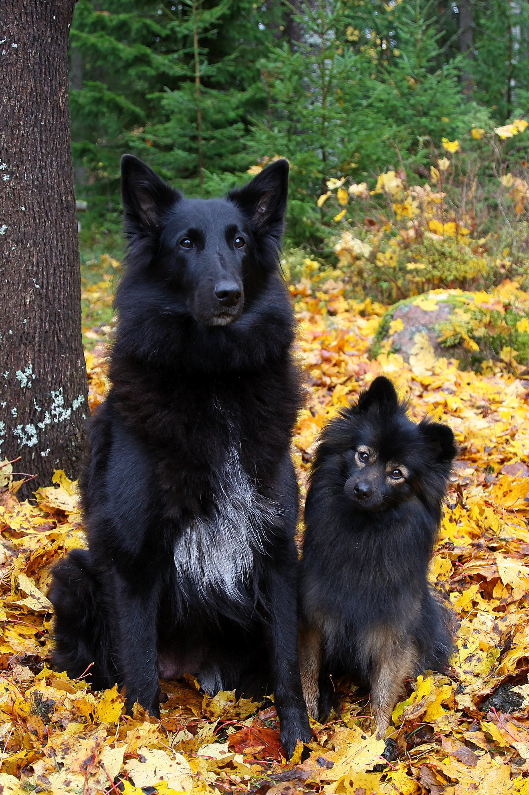
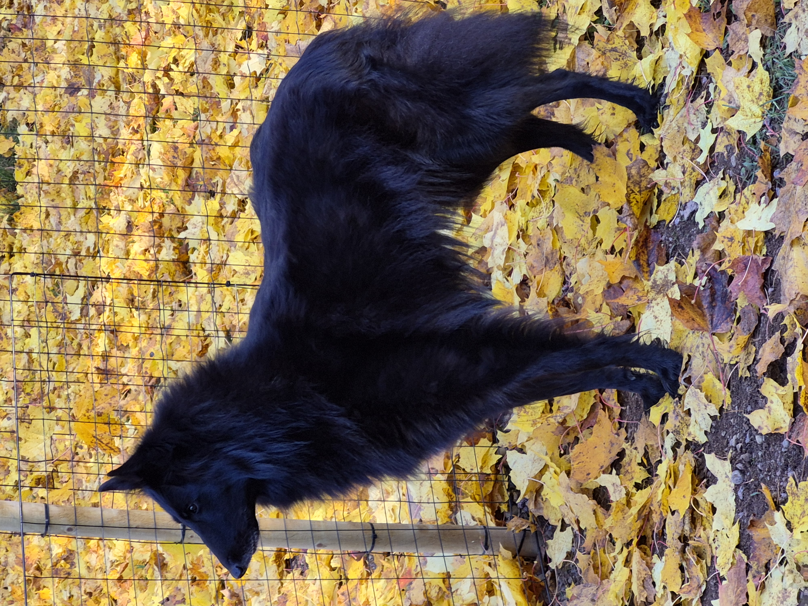
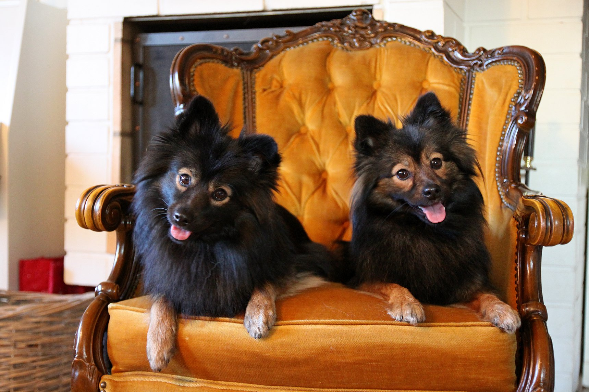
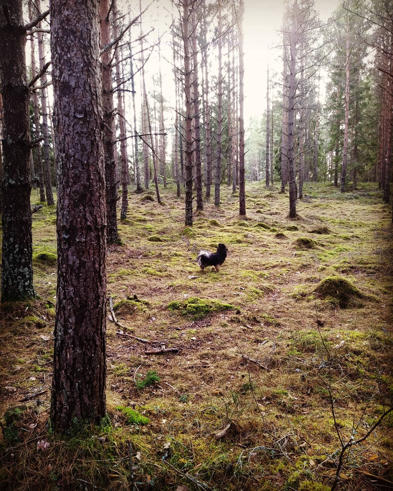

Rivigalin Kennel: Belgianpaimenkoiria & Mittelspitzejä
Perhekeskeistä, kodinomaista kasvatusta luonnon keskellä Inkoossa. Koiramme elävät kanssamme arjessa, niin kotisohvalla kuin harrastuksissakin. Liikumme luonnossa ja harrastamme aktiivisesti eri lajeja, mm. agilityä pk-lajeja.

Kasvattamamme rodut
Keskitymme kahteen upeaan rotuun, jotka sopivat täydellisesti aktiiviseen ja rakastavaan kotiin.

Belgianpaimenkoira, Groenendael
Älykäs, uskollinen ja energinen kumppani. Sopii aktiiviseen perheeseen, harrastuksiin ja näyttelyihin.

Mittelspitz
Eloisa, kiintyvä ja valpas pystykorva. Erinomainen perhekoira, joka rakastaa olla mukana kaikessa tekemisessä.

Elämää metsän siimeksessä
Uskomme, että onnellisin koira on sellainen, joka saa elää lajityypillistä elämää. Inkoon maaseudulla sijaitseva kotimme tarjoaa koirillemme ihanteellisen ympäristön.
Meillä koirat eivät asu erillisissä kenneltiloissa, vaan ne ovat rakkaita perheenjäseniä. Ne nukkuvat sohvalla vieressämme, ulkoilevat vapaana suurella pihallamme ja osallistuvat arkemme touhuihin. Tämä luo luottavaisen ja tasapainoisen pohjan myös kasvateillemme.
- check_circle Kodinomaista kasvatusta
- check_circle Runsaasti ulkoilua luonnossa
- check_circle Terveys ja luonne edellä